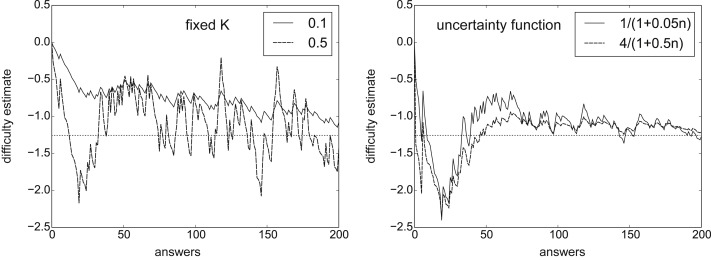

viewof thetaStart = Inputs.range([-3, 3], {
value: 0.5,
step: 0.1,
label: "θₛ: Startfähigkeit des Lernenden"
})
viewof difficultyStart = Inputs.range([-3, 3], {
value: 1.5,
step: 0.1,
label: "dᵢ: Startschwierigkeit der Aufgabe"
})
viewof k = Inputs.range([0.01, 1], {
value: 0.1,
step: 0.01,
label: "K: Lernrate"
})
viewof resultText = Inputs.radio(
["Korrekt = 1", "Falsch = 0"],
{
value: "Korrekt = 1",
label: "correctₛᵢ: Ergebnis der Bearbeitung"
}
)4 Umsetzung einer Lernressource
4.1 Motivation und Problemstellung
Adaptive Lernsysteme verfolgen das Ziel, Lerninhalte an die individuellen Voraussetzungen und den aktuellen Wissensstand von Lernenden anzupassen. Um geeignete Aufgaben oder Lernressourcen auswählen zu können, müssen sie daher zunächst möglichst zuverlässig abschätzen, wie gut ein Lernender ein bestimmtes Themengebiet bereits beherrscht. Die Modellierung dieses aktuellen Leistungs- oder Wissensstands stellt eine zentrale Aufgabe adaptiver Lernsysteme dar (Pelánek 2017; Abdi u. a. 2019).
Für diese Schätzung wurden unterschiedliche Verfahren entwickelt. Während einige Ansätze auf psychometrischen oder probabilistischen Modellen beruhen, existieren auch Verfahren, die ihre Schätzungen nach jeder neuen Interaktion kontinuierlich aktualisieren. Ein vergleichsweise einfaches und weit verbreitetes Verfahren dieser Art ist das Elo-Verfahren. Es wurde ursprünglich zur Bewertung von Schachspielern entwickelt (Elo 1978) und später für verschiedene Anwendungsgebiete, darunter auch adaptive Lernsysteme, weiterentwickelt und eingesetzt (Abdi u. a. 2019).
Im Vergleich zu vielen komplexeren Modellierungsansätzen zeichnet sich das Elo-Verfahren durch eine vergleichsweise einfache Struktur sowie die Möglichkeit einer kontinuierlichen Aktualisierung aus. Diese Eigenschaften machen es für den Einsatz in digitalen Lernumgebungen interessant und haben dazu geführt, dass Elo-basierte Verfahren in der Literatur als geeignete Ansätze zur Lernendenmodellierung diskutiert werden (Pelánek 2016; Abdi u. a. 2019).
4.2 Die Grundidee des Elo-Verfahrens
Die Grundidee des Elo-Verfahrens entstand ursprünglich im Schachsport. Ziel war es, die relative Spielstärke verschiedener Spieler möglichst objektiv abzuschätzen. Hierzu wird jedem Spieler eine numerische Bewertung, das sogenannte Rating, zugeordnet. Treffen zwei Spieler aufeinander, kann aus ihren Ratings abgeschätzt werden, welcher Spieler mit höherer Wahrscheinlichkeit gewinnen sollte (Elo 1978).
Betrachtet man beispielsweise zwei Schachspieler mit einem Rating von 1600 beziehungsweise 1400 Punkten, so würde das Elo-Verfahren erwarten, dass der Spieler mit dem höheren Rating häufiger gewinnt. Das tatsächliche Ergebnis einer einzelnen Partie ist jedoch nicht sicher vorhersagbar. Auch ein schwächer eingeschätzter Spieler kann gewinnen und für eine Überraschung sorgen.
Genau diese Kombination aus Erwartung und tatsächlichem Ergebnis bildet den Kern des Elo-Verfahrens. Vor jeder Begegnung wird zunächst abgeschätzt, wie wahrscheinlich ein bestimmter Ausgang ist. Nach dem Spiel wird das tatsächliche Ergebnis mit dieser Erwartung verglichen. Entspricht das Ergebnis der Erwartung, verändern sich die Bewertungen nur geringfügig. Tritt dagegen ein unerwartetes Ergebnis ein, werden die Bewertungen stärker angepasst (Elo 1978).
Dieses Prinzip lässt sich auch auf adaptive Lernsysteme übertragen. Anstelle zweier Schachspieler treten hier ein Lernender und eine Aufgabe gegeneinander an. Dem Lernenden wird eine geschätzte Fähigkeit zugeordnet, während die Aufgabe durch einen Schwierigkeitswert beschrieben wird. Aus beiden Werten lässt sich ableiten, wie wahrscheinlich eine erfolgreiche Bearbeitung der Aufgabe ist. Nach jeder Interaktion werden die Schätzwerte anhand des tatsächlichen Ergebnisses aktualisiert, sodass sich die Einschätzung des Lernenden kontinuierlich an neue Informationen anpasst (Abdi u. a. 2019).
Die grundlegende Idee des Elo-Verfahrens lässt sich somit auf drei einfache Schritte zurückführen:
- Aus den vorhandenen Bewertungen wird eine Erwartung gebildet.
- Das tatsächliche Ergebnis wird beobachtet.
- Die Bewertungen werden entsprechend angepasst.
Diese drei Schritte bilden den Kern des Elo-Verfahrens und werden im weiteren Verlauf der Lernressource zunächst algorithmisch und anschließend mathematisch genauer betrachtet.
4.3 Algorithmische Funktionsweise des Elo-Verfahrens
Im vorherigen Abschnitt wurde die grundlegende Idee des Elo-Verfahrens vorgestellt. Dabei wurde deutlich, dass das Verfahren aus einer vorhandenen Bewertung zunächst eine Erwartung ableitet, das tatsächliche Ergebnis beobachtet und die Bewertung anschließend entsprechend anpasst. Dieser Ablauf wird nach jeder Interaktion erneut durchlaufen und bildet den Kern des Elo-Verfahrens (Pelánek 2016).
Zu Beginn einer Interaktion liegen für den Lernenden und die Aufgabe jeweils aktuelle Schätzwerte vor. Der Lernende wird durch eine geschätzte Fähigkeit beschrieben, während für die Aufgabe ein Schwierigkeitswert angenommen wird. Beide Werte repräsentieren den aktuellen Kenntnisstand des Systems über den Lernenden beziehungsweise die Aufgabe (Pelánek 2016; Abdi u. a. 2019).
Im ersten Schritt wird aus diesen Schätzwerten eine Erwartung gebildet. Das System bestimmt, mit welcher Wahrscheinlichkeit ein Lernender die betrachtete Aufgabe erfolgreich bearbeiten sollte. Besitzt der Lernende im Vergleich zur Schwierigkeit der Aufgabe eine hohe geschätzte Fähigkeit, wird eine erfolgreiche Bearbeitung wahrscheinlicher eingeschätzt. Ist die Aufgabe schwieriger als die geschätzte Fähigkeit des Lernenden, fällt die erwartete Erfolgswahrscheinlichkeit entsprechend geringer aus (Elo 1978; Pelánek 2016).
Im zweiten Schritt wird das tatsächliche Ergebnis der Bearbeitung beobachtet. Das System stellt fest, ob die Aufgabe erfolgreich gelöst wurde oder nicht. Dieses Ergebnis liefert neue Informationen über die Fähigkeit des Lernenden und gegebenenfalls auch über die Schwierigkeit der Aufgabe.
Anschließend wird das beobachtete Ergebnis mit der zuvor berechneten Erwartung verglichen. Stimmen Erwartung und Ergebnis weitgehend überein, werden die Schätzwerte nur geringfügig angepasst. Treten dagegen unerwartete Ergebnisse auf, beispielsweise wenn ein Lernender eine schwierige Aufgabe erfolgreich bearbeitet oder an einer einfachen Aufgabe scheitert, erfolgt eine stärkere Aktualisierung der Bewertungen (Elo 1978; Pelánek 2016).
Im letzten Schritt werden die Schätzwerte aktualisiert. Die neu berechnete Fähigkeit des Lernenden sowie gegebenenfalls die angepasste Schwierigkeit der Aufgabe bilden die Ausgangsbasis für die nächste Interaktion. Durch die wiederholte Anwendung dieses Ablaufs passt sich das Modell kontinuierlich an neue Beobachtungen an und verbessert fortlaufend seine Schätzung des aktuellen Leistungsstands (Pelánek 2016; Abdi u. a. 2019).
Der algorithmische Ablauf des Elo-Verfahrens lässt sich somit in fünf Schritte zusammenfassen:
- Aktuelle Schätzwerte bestimmen.
- Erwartete Erfolgswahrscheinlichkeit berechnen.
- Tatsächliches Ergebnis beobachten.
- Erwartung und Ergebnis vergleichen.
- Schätzwerte aktualisieren.
Diese fünf Schritte werden nach jeder bearbeiteten Aufgabe erneut durchlaufen und bilden den grundlegenden Arbeitsablauf des Elo-Verfahrens. Im nächsten Abschnitt wird betrachtet, wie die einzelnen Berechnungsschritte mathematisch beschrieben werden können.
4.4 Mathematische Grundlagen des Elo-Verfahrens
Im vorherigen Abschnitt wurde die grundlegende Funktionsweise des Elo-Verfahrens beschrieben. Dabei wurde deutlich, dass das Verfahren aus der geschätzten Fähigkeit eines Lernenden und der Schwierigkeit einer Aufgabe zunächst eine Erwartung ableitet und diese nach jeder Interaktion aktualisiert.
Um diesen Prozess mathematisch zu beschreiben, müssen zunächst geeignete Größen definiert werden. Im Elo-Verfahren wird jedem Lernenden eine numerische Bewertung zugeordnet, welche die aktuell geschätzte Fähigkeit repräsentiert. Analog erhält auch jede Aufgabe einen numerischen Schwierigkeitswert. Beide Bewertungen werden kontinuierlich angepasst und bilden die Grundlage für die weiteren Berechnungen (Pelánek 2016; Elo 1978).
Die zentrale Idee besteht darin, aus der Beziehung zwischen Fähigkeit und Aufgabenschwierigkeit die Wahrscheinlichkeit einer erfolgreichen Bearbeitung abzuleiten. Besitzt ein Lernender eine höhere geschätzte Fähigkeit als die Schwierigkeit einer Aufgabe, sollte die Erfolgswahrscheinlichkeit entsprechend größer ausfallen. Umgekehrt sinkt diese Wahrscheinlichkeit, wenn die Aufgabe schwieriger eingeschätzt wird als die Fähigkeit des Lernenden.
4.4.1 Erwartete Erfolgswahrscheinlichkeit
Der erste Berechnungsschritt des Elo-Verfahrens besteht darin, die Wahrscheinlichkeit zu bestimmen, mit der ein Lernender eine Aufgabe erfolgreich bearbeiten sollte. Diese Wahrscheinlichkeit wird als erwartete Erfolgswahrscheinlichkeit bezeichnet.
Im Bildungsbereich wird die Erfolgswahrscheinlichkeit aus der Differenz zwischen der geschätzten Fähigkeit eines Lernenden und der Schwierigkeit einer Aufgabe berechnet. Besitzt ein Lernender eine höhere Fähigkeit als die Schwierigkeit der Aufgabe, wird eine erfolgreiche Bearbeitung wahrscheinlicher. Ist die Aufgabe schwieriger als die geschätzte Fähigkeit des Lernenden, fällt die erwartete Erfolgswahrscheinlichkeit entsprechend geringer aus (Pelánek 2016).
Die Berechnung erfolgt mithilfe einer logistischen Funktion:
\[ P_{si} = \frac{1}{1+e^{d_i-\theta_s}} \tag{1} \]
Dabei bezeichnet
| Symbol | Bedeutung |
|---|---|
| \(P_{si}\) | Wahrscheinlichkeit einer korrekten Antwort |
| \(\theta_s\) | Fähigkeit des Lernenden |
| \(d_i\) | Schwierigkeit der Aufgabe |
Der Wert von \(P_{si}\) liegt stets zwischen 0 und 1. Werte nahe 1 deuten auf eine hohe Erfolgswahrscheinlichkeit hin, während Werte nahe 0 auf eine geringe Erfolgswahrscheinlichkeit hinweisen. Besitzen Lernender und Aufgabe denselben Bewertungswert, also \(\theta_s=d_i\), ergibt sich eine erwartete Erfolgswahrscheinlichkeit von 0,5. Das System geht in diesem Fall davon aus, dass eine korrekte und eine falsche Antwort gleichermaßen wahrscheinlich sind (Pelánek 2016).
Die ursprüngliche Elo-Formulierung im Schach verwendet statt der natürlichen Exponentialfunktion e eine Potenz zur Basis 10 sowie den Skalierungsfaktor 400. Beide Darstellungen beschreiben jedoch denselben grundlegenden Zusammenhang zwischen Fähigkeitsdifferenz und Erfolgswahrscheinlichkeit. Für Anwendungen im Bildungsbereich wird häufig die mathematisch einfachere Form mit der Standard-Logistikfunktion verwendet (Pelánek 2016).
4.4.2 Aktualisierung der Bewertungen
Nachdem die erwartete Erfolgswahrscheinlichkeit berechnet wurde, wird sie mit dem tatsächlichen Ergebnis der Bearbeitung verglichen. Die zentrale Idee des Elo-Verfahrens besteht darin, die Schätzwerte für die Fähigkeit eines Lernenden und die Schwierigkeit einer Aufgabe nach jeder Interaktion anzupassen. Auf diese Weise kann das Modell neue Informationen unmittelbar berücksichtigen und seine Vorhersagen fortlaufend verbessern (Pelánek 2016).
Die Anpassung basiert auf der Differenz zwischen dem beobachteten Ergebnis und der zuvor berechneten Erfolgswahrscheinlichkeit. Fällt das Ergebnis besser aus als erwartet, wird die Fähigkeit des Lernenden erhöht und die Schwierigkeit der Aufgabe reduziert. Fällt das Ergebnis schlechter aus als erwartet, erfolgt die Anpassung in die entgegengesetzte Richtung.
Die Aktualisierung der Fähigkeit eines Lernenden erfolgt nach der Formel
\[ \theta_s' = \theta_s + K \left( correct_{si} - P_{si} \right) \tag{2} \]
Die Schwierigkeit einer Aufgabe wird analog aktualisiert:
\[ d_i' = d_i - K \left( correct_{si} - P_{si} \right) \tag{3} \]
Zum Start liegen dabei die Werte von \(\theta_s\) und \(d_i\) bei 0 (Pelánek 2016).
Dabei bezeichnet
| Symbol | Bedeutung |
|---|---|
| \(\theta_s'\) | aktualisierte Fähigkeit des Lernenden |
| \(d_i'\) | aktualisierte Schwierigkeit der Aufgabe |
| \(correct_{si}\) | tatsächliches Ergebnis (0 = falsch, 1 = richtig) |
| \(P_{si}\) | erwartete Erfolgswahrscheinlichkeit |
| \(K\) | Anpassungs- bzw. Lernrate |
Der Ausdruck
\[ correct_{si}-P_{si} \tag{4} \]
beschreibt die Abweichung zwischen dem tatsächlichen und dem erwarteten Ergebnis. Dieser Wert wird häufig als Vorhersagefehler bezeichnet. Ist die Antwort korrekt und wurde dies zuvor nur mit einer geringen Wahrscheinlichkeit erwartet, ergibt sich ein positiver Vorhersagefehler. Wird eine Aufgabe dagegen falsch beantwortet, obwohl eine hohe Erfolgswahrscheinlichkeit vorhergesagt wurde, fällt der Vorhersagefehler negativ aus.
Der Parameter \(K\) bestimmt die Stärke der Aktualisierung. Große Werte führen zu schnelleren Anpassungen der Schätzwerte, während kleine Werte stabilere, aber langsamere Veränderungen bewirken. Die Wahl dieses Parameters beeinflusst daher maßgeblich, wie schnell das Modell auf neue Beobachtungen reagiert (Pelánek 2016).
Die Aktualisierungsregeln sorgen dafür, dass die Schätzwerte schrittweise an die tatsächlich beobachteten Leistungen angepasst werden. Im nächsten Abschnitt wird dieser Prozess anhand eines konkreten Zahlenbeispiels Schritt für Schritt nachvollzogen.
4.4.3 Beispiel einer Aktualisierung
Die bisher vorgestellten Formeln lassen sich anhand eines konkreten Zahlenbeispiels veranschaulichen.
Angenommen, die geschätzte Fähigkeit eines Lernenden beträgt
\[ \theta_s = 0.5 \]
während die Schwierigkeit einer Aufgabe mit
\[ d_i = 1.5 \]
eingeschätzt wird. Die Aufgabe gilt damit als deutlich schwieriger als das aktuelle Fähigkeitsniveau des Lernenden.
Die erwartete Erfolgswahrscheinlichkeit ergibt sich gemäß Gleichung (1) zu
\[ \begin{aligned} P_{si} &= \frac{1}{1+e^{1.5-0.5}} \\ &= \frac{1}{1+e^1} \\ &\approx 0.27 \end{aligned} \]
Das System geht somit davon aus, dass der Lernende die Aufgabe nur mit einer Wahrscheinlichkeit von etwa 27 % korrekt beantworten wird.
Nun sei angenommen, dass der Lernende die Aufgabe dennoch richtig löst. Das beobachtete Ergebnis beträgt daher
\[ correct_{si}=1 \]
Für dieses Beispiel werde eine Lernrate von
\[ K=0.1 \]
verwendet.
Zunächst wird der Vorhersagefehler mithilfe von Gleichung (4) berechnet:
\[ \begin{aligned} correct_{si}-P_{si} &= 1-0.27 \\ &= 0.73 \end{aligned} \]
Da das tatsächliche Ergebnis deutlich besser ausfällt als erwartet, ergibt sich ein vergleichsweise großer positiver Vorhersagefehler.
Die Fähigkeit des Lernenden wird anschließend gemäß Gleichung (2) zu
\[ \begin{aligned} \theta_s' &= \theta_s + K(correct_{si}-P_{si}) \\ &= 0.5 + 0.1(1-0.27) \\ &= 0.5 + 0.073 \\ &= 0.573 \end{aligned} \]
aktualisiert.
Für die Schwierigkeit der Aufgabe ergibt sich analog gemäß Gleichung (3)
\[ \begin{aligned} d_i' &= d_i - K(correct_{si}-P_{si}) \\ &= 1.5 - 0.1(1-0.27) \\ &= 1.5 - 0.073 \\ &= 1.427 \end{aligned} \]
Nach der Aktualisierung wird der Lernende somit etwas stärker und die Aufgabe etwas leichter eingeschätzt als zuvor. Das Elo-Verfahren berücksichtigt dadurch die neue Information, dass ein unerwartet gutes Ergebnis erzielt wurde.
Je stärker ein tatsächliches Ergebnis von der zuvor berechneten Erwartung abweicht, desto größer fällt die Anpassung der Schätzwerte aus. Überraschende Ergebnisse führen daher zu stärkeren Aktualisierungen als Ergebnisse, die bereits erwartet wurden.
4.5 Implementierung des Elo-Verfahrens
Die mathematischen Grundlagen des Elo-Verfahrens wurden in den vorherigen Abschnitten vorgestellt. Für den praktischen Einsatz in adaptiven Lernsystemen müssen diese Berechnungsschritte jedoch algorithmisch umgesetzt werden. Die Fähigkeit eines Lernenden und die Schwierigkeit einer Aufgabe sollen nach jeder Bearbeitung automatisch aktualisiert werden, sodass das System kontinuierlich neue Informationen berücksichtigen kann.
Im Rahmen dieser Lernressource wird das Elo-Verfahren exemplarisch in Python implementiert. Ziel ist nicht die Entwicklung eines vollständigen adaptiven Lernsystems, sondern die schrittweise Umsetzung der zuvor eingeführten mathematischen Konzepte. Dadurch wird deutlich, wie aus den Gleichungen des Elo-Verfahrens ein ausführbarer Algorithmus entsteht.
4.5.1 Repräsentation von Lernenden und Aufgaben
Für die Implementierung werden zunächst die beiden zentralen Größen des Elo-Verfahrens benötigt: die Fähigkeit eines Lernenden und die Schwierigkeit einer Aufgabe. Diese können in Python zunächst als einfache numerische Variablen gespeichert werden:
theta = 0.5 # Fähigkeit des Lernenden
difficulty = 1.5 # Schwierigkeit der Aufgabe4.5.2 Berechnung der erwarteten Erfolgswahrscheinlichkeit
Der erste Berechnungsschritt des Elo-Verfahrens besteht in der Bestimmung der erwarteten Erfolgswahrscheinlichkeit.
Die im vorherigen Kapitel eingeführte Formel
\[ P_{si} = \frac{1}{1+e^{d_i-\theta_s}} \]
lässt sich in Python direkt umsetzen:
import math
def probability(theta, difficulty):
return 1 / (1 + math.exp(difficulty - theta))Die Funktion erhält die Fähigkeit eines Lernenden und die Schwierigkeit einer Aufgabe als Eingabe und liefert die erwartete Erfolgswahrscheinlichkeit zurück.
Für die Werte aus dem vorherigen Beispiel ergibt sich:
p = probability(0.5, 1.5)
print(round(p, 2))Ausgabe:
0.27Das System erwartet somit eine korrekte Antwort mit einer Wahrscheinlichkeit von etwa 27 %.
4.5.3 Aktualisierung der Bewertungen
Nach der Bearbeitung einer Aufgabe werden die Bewertungen aktualisiert. Hierzu werden die in Kapitel 5 eingeführten Aktualisierungsgleichungen verwendet.
Die Aktualisierung kann in Python wie folgt implementiert werden:
def update(theta, difficulty, result, k=0.1):
p = probability(theta, difficulty)
theta_new = theta + k * (result - p)
difficulty_new = difficulty - k * (result - p)
return theta_new, difficulty_newDie Funktion erhält:
- die Fähigkeit des Lernenden,
- die Schwierigkeit der Aufgabe,
- das beobachtete Ergebnis (0 oder 1),
- sowie die Lernrate k.
Als Ergebnis liefert sie die aktualisierten Werte zurück.
4.5.4 Durchführung einer Aktualisierung
Die zuvor implementierten Funktionen können nun kombiniert werden.
Angenommen, ein Lernender beantwortet die betrachtete Aufgabe korrekt:
theta = 0.5
difficulty = 1.5
theta, difficulty = update(
theta,
difficulty,
result=1,
k=0.1
)
print(round(theta, 3))
print(round(difficulty, 3))Ausgabe:
0.573
1.427Die Werte entsprechen exakt den Ergebnissen des zuvor durchgerechneten Beispiels. Die Fähigkeit des Lernenden steigt an, während die Schwierigkeit der Aufgabe leicht reduziert wird.
4.5.5 Zusammenspiel der einzelnen Schritte
Der vollständige Elo-Algorithmus besteht somit aus einer wiederholten Folge von Berechnungsschritten:
- Aktuelle Fähigkeit und Aufgabenschwierigkeit bestimmen.
- Erwartete Erfolgswahrscheinlichkeit berechnen.
- Tatsächliches Ergebnis beobachten.
- Vorhersagefehler bestimmen.
- Fähigkeit und Schwierigkeit aktualisieren.
- Mit der nächsten Aufgabe fortfahren.
Durch die wiederholte Anwendung dieser Schritte entsteht ein dynamisches Modell des Lernenden, das sich kontinuierlich an neue Beobachtungen anpasst.
Im nächsten Abschnitt wird dieser Prozess mithilfe einer interaktiven Simulation visualisiert, sodass die Auswirkungen unterschiedlicher Fähigkeiten, Aufgabenschwierigkeiten und Lernraten unmittelbar untersucht werden können.
4.6 Interaktive Simulation des Elo-Verfahrens
Die mathematischen Grundlagen und die Implementierung des Elo-Verfahrens wurden in den vorherigen Abschnitten erläutert. Viele Eigenschaften des Verfahrens lassen sich jedoch erst durch eigenes Experimentieren vollständig nachvollziehen. Insbesondere der Zusammenhang zwischen Fähigkeit, Aufgabenschwierigkeit, Erfolgswahrscheinlichkeit und Aktualisierung wird deutlicher, wenn die Auswirkungen von Parameteränderungen unmittelbar beobachtet werden können.
Aus diesem Grund wird das Elo-Verfahren im Rahmen dieser Lernressource durch eine interaktive Simulation ergänzt. Die Simulation ermöglicht es, zentrale Parameter des Verfahrens selbst zu verändern und die Auswirkungen auf die Schätzwerte unmittelbar zu beobachten. Dadurch soll das Verständnis der zugrunde liegenden Mechanismen unterstützt und die Verbindung zwischen den mathematischen Formeln und dem Verhalten des Algorithmus verdeutlicht werden.
4.6.1 Nutzung der Simulation
Verändern Sie die Werte für die Fähigkeit des Lernenden (\(\theta_s\)), die Schwierigkeit der Aufgabe (\(d_i\)), die Lernrate (\(K\)) sowie das Ergebnis der Bearbeitung (\(correct_{si}\)). Beobachten Sie anschließend, wie sich die erwartete Erfolgswahrscheinlichkeit und die aktualisierten Schätzwerte verändern.
Führen Sie mehrere Aktualisierungsschritte nacheinander durch und vergleichen Sie die Entwicklung der Fähigkeits- und Schwierigkeitswerte. Achten Sie insbesondere darauf, wie stark sich die Bewertungen bei erwarteten und unerwarteten Ergebnissen verändern und welchen Einfluss die Wahl der Lernrate auf die Aktualisierung hat.
Die Simulation zeigt, dass die Bewertungen nicht nur vom tatsächlichen Ergebnis abhängen, sondern auch von der zuvor erwarteten Erfolgswahrscheinlichkeit. Wird eine Aufgabe korrekt gelöst, obwohl die Erfolgswahrscheinlichkeit gering war, steigt die Fähigkeit stärker an. Wird eine Aufgabe falsch beantwortet, obwohl eine hohe Erfolgswahrscheinlichkeit erwartet wurde, sinkt die Fähigkeit entsprechend. Die Lernrate (K) bestimmt dabei, wie stark diese Anpassungen ausfallen.
4.7 Anwendungen des Elo-Verfahrens in adaptiven Lernsystemen
Das Elo-Verfahren wird in adaptiven Lernsystemen vor allem zur Schätzung von Fähigkeits- und Schwierigkeitswerten eingesetzt. Dabei wird jede Interaktion zwischen einem Lernenden und einer Aufgabe als Beobachtung genutzt, um die zugrunde liegenden Parameter fortlaufend zu aktualisieren. Durch diese kontinuierliche Aktualisierung eignet sich das Verfahren insbesondere für Systeme, die den Wissensstand von Lernenden während des Lernprozesses modellieren möchten. (Pelánek 2016)
4.7.1 Lernendenmodellierung
Eine zentrale Anwendung des Elo-Verfahrens besteht in der Schätzung der Fähigkeiten von Lernenden. Nach jeder bearbeiteten Aufgabe wird die Fähigkeitsbewertung anhand des beobachteten Ergebnisses aktualisiert. Dadurch entsteht ein dynamisches Modell des aktuellen Wissensstands, das sich kontinuierlich an neue Beobachtungen anpasst. (Pelánek 2016)
4.7.2 Schätzung von Aufgabenschwierigkeiten
Neben der Modellierung von Lernenden können auch Schwierigkeitswerte für Aufgaben geschätzt werden. Neue Aufgaben erhalten zunächst einen Startwert, der im Laufe der Nutzung anhand der Antworten vieler Lernender angepasst wird. Auf diese Weise kann ein System automatisch Informationen über die Schwierigkeit einzelner Aufgaben gewinnen. (Pelánek 2016)
4.7.3 Grundlage adaptiver Entscheidungen
Die geschätzten Fähigkeits- und Schwierigkeitswerte können anschließend als Grundlage adaptiver Entscheidungen dienen. Beispielsweise können Lernsysteme Aufgaben auswählen, deren Schwierigkeit zum aktuellen Leistungsstand eines Lernenden passt. Die eigentliche Aufgabenwahl ist dabei nicht Bestandteil des Elo-Verfahrens selbst, sondern nutzt die durch das Verfahren bereitgestellten Schätzwerte. (Pelánek 2016)
4.7.4 Open Learner Models
Eine weitere Anwendung besteht in sogenannten Open Learner Models. Dabei werden die durch das System geschätzten Fähigkeitswerte nicht ausschließlich intern verwendet, sondern den Lernenden direkt zugänglich gemacht. Die Lernenden erhalten dadurch Einblick in die Einschätzung ihres aktuellen Wissensstands und können ihre Stärken und Schwächen besser nachvollziehen. Abdi et al. beschreiben einen solchen Ansatz auf Basis eines mehrdimensionalen Elo-Modells (M-Elo), bei dem Fähigkeitswerte für verschiedene Themengebiete visualisiert werden. Die Autoren argumentieren, dass transparente Darstellungen des Lernendenmodells die Reflexion des eigenen Lernfortschritts unterstützen und das Vertrauen in die Empfehlungen eines adaptiven Systems fördern können (Abdi u. a. 2019).
Die dargestellten Anwendungsbereiche verdeutlichen, dass das Elo-Verfahren nicht nur zur Schätzung von Fähigkeiten eingesetzt werden kann, sondern auch die Grundlage verschiedener adaptiver Funktionen in modernen Lernsystemen bildet. Trotz dieser Vorteile besitzt das Verfahren jedoch auch mehrere Einschränkungen, die im nächsten Kapitel betrachtet werden.
4.8 Grenzen und Erweiterungen des Elo-Verfahrens
4.8.1 Grenzen des Standard-Elo-Verfahrens
Das Elo-Verfahren bietet eine vergleichsweise einfache und effiziente Möglichkeit zur Modellierung von Lernenden und Aufgaben. Insbesondere die kontinuierliche Aktualisierung nach jeder Interaktion sowie die geringe Anzahl benötigter Parameter machen das Verfahren für adaptive Lernsysteme attraktiv (Pelánek 2016). Dennoch weist das Standard-Elo-Verfahren mehrere Einschränkungen auf, die seine Aussagekraft in komplexen Bildungsszenarien begrenzen können.
Eine erste Einschränkung besteht darin, dass die Fähigkeit eines Lernenden durch einen einzigen Fähigkeitswert beschrieben wird. Das Verfahren geht somit implizit davon aus, dass sich der Wissensstand einer Person durch eine einzige Dimension repräsentieren lässt. In realen Lernumgebungen setzt sich Wissen jedoch häufig aus mehreren Teilgebieten zusammen. Ein Lernender kann beispielsweise in einem Themenbereich sehr gute Kenntnisse besitzen, während gleichzeitig Defizite in anderen Bereichen bestehen. Solche Unterschiede können durch einen einzelnen Elo-Wert nur eingeschränkt abgebildet werden (Pelánek 2016).
Darüber hinaus verwendet das Standard-Elo-Verfahren einen konstanten Aktualisierungsparameter (K). Die Wahl dieses Parameters beeinflusst das Verhalten des Modells maßgeblich. Kleine Werte führen zu einer langsamen Anpassung der Schätzwerte, während große Werte zwar schneller auf neue Beobachtungen reagieren, jedoch zu instabilen Schätzungen führen können. Die Verwendung eines festen Parameters stellt daher einen Kompromiss zwischen Stabilität und Anpassungsgeschwindigkeit dar (Pelánek 2016).
Eine weitere Einschränkung besteht darin, dass das Standard-Elo-Modell keine Unsicherheit der Schätzwerte berücksichtigt. Neue Lernende und Aufgaben werden mit derselben Aktualisierungsstärke behandelt wie Objekte, für die bereits viele Beobachtungen vorliegen. Intuitiv erscheint dies problematisch, da die Schätzungen bei wenigen verfügbaren Daten deutlich unsicherer sind als nach einer großen Anzahl von Interaktionen (Pelánek 2016).
Schließlich basiert das Standard-Elo-Verfahren in seiner einfachsten Form auf binären Ergebnissen. Antworten werden lediglich als korrekt oder inkorrekt betrachtet. In realen Bildungssystemen treten jedoch häufig komplexere Situationen auf, beispielsweise Multiple-Choice-Aufgaben mit Ratewahrscheinlichkeit, Teilpunktebewertungen, Hinweissysteme oder die Berücksichtigung von Bearbeitungszeiten. Diese Informationen können durch das Grundmodell nur eingeschränkt genutzt werden (Pelánek 2016).
Aus diesen Gründen wurden verschiedene Erweiterungen des Elo-Verfahrens entwickelt, die versuchen, einzelne Schwächen des Standardmodells zu adressieren. Im folgenden Abschnitt wird zunächst die Verwendung von Unsicherheitsfunktionen als Alternative zu einem konstanten Aktualisierungsparameter betrachtet.
4.8.2 Unsicherheitsfunktionen
Im Standard-Elo-Verfahren wird die Stärke der Aktualisierung durch den konstanten Parameter \(K\)bestimmt. Dieser Parameter beeinflusst, wie stark neue Beobachtungen die Bewertungen verändern. Die Wahl eines geeigneten Wertes stellt dabei einen Kompromiss dar: Kleine Werte führen zu stabilen, aber langsamen Anpassungen, während große Werte schnelle Reaktionen ermöglichen, jedoch zu stärkeren Schwankungen der Schätzwerte führen können. Eine wesentliche Einschränkung eines konstanten Aktualisierungsparameters besteht darin, dass die Unsicherheit der Schätzwerte nicht berücksichtigt wird. Zu Beginn liegen für einen Lernenden oder eine Aufgabe nur wenige Informationen vor. Die Schätzungen sind daher zunächst mit einer hohen Unsicherheit verbunden. Mit zunehmender Anzahl beobachteter Interaktionen steigt dagegen das Vertrauen in die geschätzten Werte (Pelánek 2016).
Aus diesem Grund verwenden viele Erweiterungen des Elo-Verfahrens anstelle eines konstanten Parameters \(K\) eine sogenannte Unsicherheitsfunktion. Die Grundidee besteht darin, die Stärke der Aktualisierung von der Anzahl bereits beobachteter Interaktionen abhängig zu machen. Bei wenigen verfügbaren Daten fallen die Aktualisierungen zunächst groß aus, sodass das Modell schnell auf neue Informationen reagieren kann. Mit zunehmender Anzahl von Beobachtungen wird die Aktualisierung schrittweise reduziert, wodurch die Schätzwerte stabiler werden (Pelánek 2016).

Abbildung 4.1 verdeutlicht den Einfluss des Aktualisierungsparameters auf die Schätzung der Aufgabenschwierigkeit. Während große konstante Werte zu deutlichen Schwankungen führen können, ermöglichen Unsicherheitsfunktionen zunächst schnelle grobe Schätzungen und anschließend eine zunehmend stabile Annäherung an den tatsächlichen Parameterwert (Pelánek 2016).
Anschaulich entspricht dieses Vorgehen dem intuitiven Umgang mit Unsicherheit. Bei einem neu registrierten Lernenden liegen zunächst kaum Informationen über dessen Leistungsstand vor. Bereits wenige Antworten können daher einen erheblichen Einfluss auf die Schätzung haben. Nach einer großen Anzahl bearbeiteter Aufgaben erscheint eine einzelne zusätzliche Beobachtung dagegen deutlich weniger aussagekräftig.
Pelánek verweist in diesem Zusammenhang auf verschiedene Ansätze zur Modellierung von Unsicherheit. Neben einfachen Unsicherheitsfunktionen existieren auch komplexere Verfahren wie das Glicko-System oder TrueSkill, die Unsicherheit explizit modellieren. Für viele Anwendungen im Bildungsbereich zeigen Untersuchungen jedoch, dass bereits einfache Unsicherheitsfunktionen zu einer deutlichen Verbesserung gegenüber einem konstanten Aktualisierungsparameter führen können (Pelánek 2016).
Die Verwendung von Unsicherheitsfunktionen stellt somit eine vergleichsweise einfache Erweiterung des Elo-Verfahrens dar, die insbesondere in frühen Phasen der Schätzung eine schnellere Anpassung ermöglicht und gleichzeitig langfristig stabilere Bewertungen erzeugt.
4.8.3 Multiple-Choice-Aufgaben und Teilpunkte
Eine weitere Einschränkung des Standard-Elo-Verfahrens besteht darin, dass Antworten in ihrer einfachsten Form ausschließlich als korrekt oder inkorrekt bewertet werden. Die Erfolgsvariable nimmt somit lediglich die Werte 0 oder 1 an. Diese Annahme ist für viele Anwendungsszenarien ausreichend, bildet jedoch zahlreiche Situationen realer Lernumgebungen nur unzureichend ab. In adaptiven Lernsystemen kommen häufig Multiple-Choice-Aufgaben, Aufgaben mit Teilpunkten oder Lernumgebungen mit Hinweissystemen zum Einsatz. In solchen Fällen liefern Lerninteraktionen oftmals mehr Informationen als eine reine Richtig-Falsch-Bewertung erfassen kann (Pelánek 2016).
Ein Beispiel hierfür sind Multiple-Choice-Aufgaben. Bei diesen Aufgaben besteht grundsätzlich die Möglichkeit, dass eine korrekte Antwort durch Raten zustande kommt. Bei vier Antwortmöglichkeiten liegt die Wahrscheinlichkeit einer zufällig richtigen Antwort bereits bei 25 %. Das Standard-Elo-Verfahren behandelt jedoch jede korrekte Antwort gleich und unterscheidet nicht zwischen tatsächlich vorhandenem Wissen und einem zufälligen Treffer. Dadurch kann insbesondere bei kurzen Tests oder wenigen Beobachtungen eine Überschätzung der Fähigkeit auftreten.
Pelánek beschreibt eine einfache Erweiterung des Elo-Verfahrens zur Berücksichtigung von Ratewahrscheinlichkeiten bei Multiple-Choice-Aufgaben. Hierzu wird die Berechnung der erwarteten Erfolgswahrscheinlichkeit angepasst. Für eine Aufgabe mit \(k\) Antwortmöglichkeiten ergibt sich die Wahrscheinlichkeit einer korrekten Antwort zu
\[ P(\text{korrekt}) = \frac{1}{k} + \frac{1-\frac{1}{k}} {1+e^{-(\theta-d)}} \tag{5} \]
Der erste Term berücksichtigt die Wahrscheinlichkeit eines zufälligen Treffers, während der zweite Term den eigentlichen Einfluss von Fähigkeit und Aufgabenschwierigkeit beschreibt (Pelánek 2016). Dadurch wird die Erfolgswahrscheinlichkeit insbesondere bei sehr schwierigen Aufgaben realistischer modelliert.
Neben Ratewahrscheinlichkeiten stellen Teilpunkte eine weitere Herausforderung für das Standard-Elo-Verfahren dar. Viele Aufgaben liefern nicht nur die Information, ob eine Lösung richtig oder falsch ist, sondern erlauben eine abgestufte Bewertung. Dies betrifft beispielsweise Programmieraufgaben, mathematische Aufgaben mit mehreren Zwischenschritten oder komplexe Problemlöseaufgaben. Ein Lernender kann dabei einen Teil der Aufgabe erfolgreich bearbeiten, ohne die vollständige Lösung zu erreichen. Da das Elo-Verfahren ursprünglich nicht auf binäre Ergebnisse beschränkt ist, können solche Teilbewertungen vergleichsweise einfach integriert werden. Anstelle der Werte 0 oder 1 wird die Erfolgsvariable als kontinuierlicher Wert zwischen 0 und 1 interpretiert. Eine Aufgabe, bei der 75 % der möglichen Punkte erreicht werden, kann beispielsweise mit einem Erfolgswert von
\[ S = 0.75 \]
in die Aktualisierung eingehen. Die grundlegende Struktur der Elo-Gleichungen bleibt dabei unverändert. Lediglich die Definition des beobachteten Ergebnisses wird erweitert (Pelánek 2016).
Ein ähnlicher Ansatz kann bei der Verwendung von Hinweissystemen eingesetzt werden. Viele intelligente Tutorensysteme erlauben es Lernenden, während der Bearbeitung zusätzliche Hinweise anzufordern. Eine korrekte Lösung nach mehreren Hilfestellungen besitzt jedoch eine andere Aussagekraft als eine vollständig selbstständig gefundene Lösung. Deshalb können korrekte Antworten abhängig von der Anzahl verwendeter Hinweise mit reduzierten Erfolgswerten bewertet werden. Eine vollständig selbstständig gelöste Aufgabe könnte beispielsweise den Wert 1 erhalten, während eine korrekte Lösung nach mehreren Hinweisen lediglich mit einem geringeren Wert in die Aktualisierung eingeht (Pelánek 2016).
Die beschriebenen Erweiterungen zeigen, dass das Elo-Verfahren deutlich flexibler eingesetzt werden kann, als die binäre Grundform vermuten lässt. Durch die Berücksichtigung von Ratewahrscheinlichkeiten, Teilpunkten und Hinweisen können zusätzliche Informationen aus Lerninteraktionen genutzt werden, ohne die grundlegende Struktur des Verfahrens verändern zu müssen. Dennoch beziehen sich diese Erweiterungen weiterhin ausschließlich auf das Antwortergebnis selbst. Weitere Informationen über den Lösungsprozess, beispielsweise die benötigte Bearbeitungszeit, bleiben unberücksichtigt. Aus diesem Grund wurden zusätzliche Elo-Varianten entwickelt, die auch zeitbezogene Informationen in die Modellierung einbeziehen.
4.8.4 Berücksichtigung von Bearbeitungszeiten
Die bisher betrachteten Erweiterungen des Elo-Verfahrens beziehen sich ausschließlich auf das Ergebnis einer Aufgabe. Dabei wird bewertet, ob eine Antwort korrekt oder inkorrekt ist beziehungsweise welcher Teil einer Aufgabe erfolgreich gelöst wurde. Informationen über den eigentlichen Lösungsprozess bleiben jedoch unberücksichtigt. Insbesondere die Bearbeitungszeit einer Aufgabe kann zusätzliche Hinweise auf den Wissensstand eines Lernenden liefern und stellt daher eine potenziell wertvolle Informationsquelle für adaptive Lernsysteme dar.
Betrachtet man zwei Lernende, die dieselbe Aufgabe korrekt beantworten, erscheint eine identische Bewertung nicht immer angemessen. Ein Lernender kann die Lösung innerhalb weniger Sekunden finden, während ein anderer deutlich mehr Zeit benötigt. Obwohl beide Antworten korrekt sind, deutet die längere Bearbeitungszeit möglicherweise auf Unsicherheit, langsameres Abrufen von Wissen oder einen höheren kognitiven Aufwand hin. Umgekehrt können sehr schnelle Fehlantworten auf unüberlegtes Raten hindeuten. Das Standard-Elo-Verfahren berücksichtigt solche Unterschiede nicht, da ausschließlich die Korrektheit der Antwort in die Aktualisierung eingeht (Pelánek 2016).
Aus diesem Grund wurden verschiedene Erweiterungen entwickelt, die Bearbeitungszeiten in die Modellierung einbeziehen. Ein erster Ansatz besteht darin, die Bearbeitungszeit selbst als Leistungsmaß zu verwenden. Dies eignet sich insbesondere für Aufgabentypen, bei denen die Lösung grundsätzlich eindeutig überprüfbar ist und die benötigte Zeit den entscheidenden Leistungsunterschied darstellt. Beispiele hierfür sind Sudoku-Rätsel oder Programmieraufgaben, bei denen die Zeit bis zur korrekten Lösung betrachtet wird (Pelánek 2016).
Analog zum klassischen Elo-Verfahren besitzt jeder Lernende einen Fähigkeitsparameter \(\theta_s\) und jede Aufgabe einen Schwierigkeitsparameter \(d_p\). Anstelle einer Erfolgswahrscheinlichkeit wird jedoch die erwartete logarithmierte Bearbeitungszeit modelliert:
\[ E(t \mid s,p)=d_p-\theta_s \tag{6} \]
Dabei bezeichnet \(E(t \mid s,p)\) die erwartete Bearbeitungszeit eines Lernenden \(s\) für die Aufgabe \(p\). Hohe Fähigkeitswerte führen zu kürzeren erwarteten Bearbeitungszeiten, während hohe Schwierigkeitswerte längere Bearbeitungszeiten erwarten lassen.
Nachdem die tatsächliche Bearbeitungszeit \(t_{sp}\) beobachtet wurde, können die Parameter ähnlich wie im klassischen Elo-Verfahren aktualisiert werden:
\[ \theta_{s,\text{neu}} = \theta_{s,\text{alt}} + K\bigl(E(t \mid s,p)-t_{sp}\bigr) \tag{7} \]
\[ d_{p,\text{neu}} = d_{p,\text{alt}} + K\bigl(t_{sp}-E(t \mid s,p)\bigr) \tag{8} \]
Bearbeitet ein Lernender eine Aufgabe schneller als vom Modell erwartet, erhöht sich seine geschätzte Fähigkeit. Gleichzeitig sinkt die geschätzte Schwierigkeit der Aufgabe. Bei längeren Bearbeitungszeiten erfolgt die Aktualisierung entsprechend in die entgegengesetzte Richtung. Das Verfahren nutzt somit dieselbe Grundidee wie das klassische Elo-Modell, ersetzt jedoch die Antwortkorrektheit durch die Bearbeitungszeit als beobachtete Leistungsgröße (Pelánek 2016).
In vielen Anwendungen erweist sich jedoch die alleinige Betrachtung der Bearbeitungszeit als unzureichend. Häufig liefern sowohl die Korrektheit einer Antwort als auch die benötigte Bearbeitungszeit relevante Informationen über den Lernprozess. Aus diesem Grund wurden Modelle entwickelt, die beide Informationsquellen gemeinsam berücksichtigen. Ein bekanntes Beispiel ist die von Klinkenberg u. a. (2011) vorgeschlagene “high speed, high stakes”-Regel. Dabei wird die Bewertung einer Antwort nicht nur von ihrer Korrektheit, sondern zusätzlich von der Bearbeitungszeit beeinflusst. Schnelle Antworten besitzen einen stärkeren Einfluss auf die Bewertung, während der Einfluss mit zunehmender Bearbeitungsdauer abnimmt (Klinkenberg u. a. 2011).
Der Nutzen solcher Erweiterungen hängt jedoch stark vom jeweiligen Anwendungskontext ab. In Lernsystemen, die Zeitlimits oder sichtbare Zeitinformationen verwenden, kann die Bearbeitungszeit ein aussagekräftiger Leistungsindikator sein. In anderen Anwendungen wird die Bearbeitungszeit zwar erfasst, den Lernenden jedoch nicht explizit angezeigt. In diesen Fällen kann sie ebenfalls zusätzliche Informationen liefern, erfordert jedoch angepasste Bewertungsverfahren (Pelánek 2016).
Die Berücksichtigung von Bearbeitungszeiten erweitert das Elo-Verfahren somit um eine zusätzliche Dimension der Leistungsbewertung. Anstatt ausschließlich das Ergebnis einer Aufgabe zu betrachten, können nun auch Informationen über den Lösungsprozess in die Modellierung einfließen. Dennoch bleibt die Fähigkeit eines Lernenden weiterhin durch einen einzelnen Wert beschrieben. In vielen Lerngebieten reicht eine solche eindimensionale Darstellung jedoch nicht aus, da Wissen aus mehreren Teilkompetenzen besteht. Aus diesem Grund wurden mehrdimensionale Erweiterungen entwickelt, die mehrere Wissenskomponenten gleichzeitig modellieren.
4.8.5 Multivariate Elo-Modelle
Die bisher betrachteten Erweiterungen des Elo-Verfahrens verändern vor allem die Art und Weise, wie Informationen aus Lerninteraktionen verarbeitet werden. Unsicherheitsfunktionen, Teilpunkte oder Bearbeitungszeiten können die Schätzung von Fähigkeiten verbessern, ändern jedoch nichts an einer grundlegenden Annahme des Standard-Elo-Modells: Die Fähigkeit eines Lernenden wird durch einen einzigen Wert beschrieben.
In vielen Lerngebieten erweist sich diese Annahme als problematisch. Wissen besteht häufig aus mehreren Teilkompetenzen, die unterschiedlich stark ausgeprägt sein können. Ein Lernender kann beispielsweise sehr gute Kenntnisse in Algebra besitzen, gleichzeitig jedoch Schwierigkeiten in der Geometrie haben. Ein einzelner Fähigkeitswert kann solche Unterschiede nur eingeschränkt erfassen. Werden alle Leistungen auf einer gemeinsamen Skala zusammengefasst, gehen Informationen über die Struktur des Wissens teilweise verloren (Pelánek 2016).
Aus diesem Grund wurden multivariate Erweiterungen des Elo-Verfahrens entwickelt. Anstelle eines einzelnen Fähigkeitsparameters wird die Kompetenz eines Lernenden durch mehrere Werte beschrieben. Jeder dieser Parameter repräsentiert einen bestimmten Wissensbereich oder eine einzelne Kompetenz. Im Bereich der Mathematik könnten dies beispielsweise Bruchrechnung, Polynome oder trigonometrische Funktionen sein (Pelánek 2016).
Ein wesentlicher Gedanke multivariater Modelle besteht darin, dass verschiedene Wissenskomponenten häufig nicht unabhängig voneinander sind. Kenntnisse in einem Themengebiet können mit Fähigkeiten in anderen Bereichen zusammenhängen. Antworten auf Aufgaben liefern daher nicht nur Informationen über das unmittelbar geprüfte Konzept, sondern unter Umständen auch über verwandte Wissensbereiche.
Zur Modellierung dieser Zusammenhänge werden Korrelationen zwischen den einzelnen Wissenskomponenten bestimmt. Beantwortet ein Lernender eine Aufgabe zu einer bestimmten Wissenskomponente, wird nicht ausschließlich die zugehörige Fähigkeit aktualisiert. Stattdessen können auch die Fähigkeitswerte verwandter Konzepte angepasst werden. Pelánek beschreibt diesen Ansatz durch die folgende Aktualisierungsregel:
\[ \theta_{sj,\text{neu}} = \theta_{sj,\text{alt}} + c_{ij} K \bigl( correct - P(correct = 1) \bigr) \tag{9} \]
Dabei bezeichnet \(\theta_{sj}\) die Fähigkeit des Lernenden \(s\) im Wissensbereich \(j\). Der Faktor \(c_{ij}\) beschreibt die Korrelation zwischen den Wissenskomponenten \(i\) und \(j\). Eine korrekte oder inkorrekte Antwort auf eine Aufgabe des Konzepts \(i\) beeinflusst somit nicht nur die Schätzung für dieses Konzept selbst, sondern gegebenenfalls auch die Bewertungen verwandter Wissensbereiche (Pelánek 2016).
Anschaulich bedeutet dies, dass Lernfortschritte in einem Themengebiet Hinweise auf den Wissensstand in verwandten Bereichen liefern können. Beherrscht ein Lernender beispielsweise grundlegende algebraische Verfahren, lässt dies häufig auch Rückschlüsse auf Kompetenzen in verwandten mathematischen Themen zu. Multivariate Elo-Modelle nutzen solche Zusammenhänge, um differenziertere Fähigkeitsprofile zu erzeugen als das eindimensionale Standard-Elo-Verfahren.
Der zusätzliche Informationsgewinn geht jedoch mit einer höheren Modellkomplexität einher. Neben den einzelnen Fähigkeitswerten müssen nun auch die Beziehungen zwischen den Wissenskomponenten modelliert werden. Zudem setzt der Ansatz voraus, dass Aufgaben bestimmten Wissensbereichen zugeordnet werden können und geeignete Informationen über deren Zusammenhänge vorliegen (Pelánek 2016).
Multivariate Elo-Modelle stellen damit einen wichtigen Schritt von einer eindimensionalen Leistungsbewertung hin zu einer strukturierten Repräsentation von Wissen dar.
4.8.6 Erweiterung durch Lernmodellierung (PFAE)
Die bisher betrachteten Erweiterungen des Elo-Verfahrens verbessern vor allem die Schätzung des aktuellen Wissensstands von Lernenden. Dabei bleibt jedoch eine grundlegende Annahme des klassischen Elo-Modells bestehen: Antworten werden ausschließlich als Beobachtungen bereits vorhandenen Wissens interpretiert. Eine korrekte Antwort liefert Hinweise auf eine hohe Fähigkeit, während eine falsche Antwort auf Wissensdefizite hindeutet.
In Bildungsszenarien greift diese Sichtweise jedoch häufig zu kurz. Die Bearbeitung einer Aufgabe dient nicht nur der Messung von Wissen, sondern stellt zugleich eine Lerngelegenheit dar. Lernende können bereits durch die Auseinandersetzung mit einer Aufgabe neue Kenntnisse erwerben oder bestehendes Wissen festigen. Eine Antwort liefert daher nicht nur Informationen über den aktuellen Wissensstand, sondern kann selbst einen Lernprozess auslösen (Papoušek u. a. 2014; Pelánek 2016).
Aus diesem Grund schlagen Papoušek et al. sowie Pelánek eine Erweiterung des Elo-Verfahrens vor, die unter der Bezeichnung Performance Factor Analysis Extended Elo (PFAE) beschrieben wird. Die Grundidee besteht darin, korrekte und inkorrekte Antworten unterschiedlich zu behandeln. Während das klassische Elo-Verfahren für beide Fälle denselben Aktualisierungsparameter verwendet, nutzt PFAE getrennte Lernraten für erfolgreiche und nicht erfolgreiche Bearbeitungen (Papoušek u. a. 2014; Pelánek 2015, 2016).
Die Aktualisierung erfolgt dabei nach den folgenden Regeln:
\[ \theta_{si,\text{neu}} = \begin{cases} \theta_{si,\text{alt}}+\gamma(1-P_i), & \text{falls die Antwort korrekt war}\\[4pt] \theta_{si,\text{alt}}+\delta P_i, & \text{falls die Antwort inkorrekt war} \end{cases} \] (Pelánek 2016)
Dabei beschreiben \(\gamma\) und \(\delta\) unterschiedliche Lernraten für korrekte beziehungsweise inkorrekte Antworten. Die Parameter erlauben es, den erwarteten Wissenszuwachs abhängig vom Ergebnis einer Aufgabe unterschiedlich zu modellieren (Pelánek 2016).
Die Motivation hinter diesem Ansatz liegt in der Beobachtung, dass Lernende auch aus Fehlern lernen können. Eine inkorrekte Antwort muss daher nicht zwangsläufig zu einer Verringerung der geschätzten Fähigkeit führen. Stattdessen kann sie als Hinweis darauf interpretiert werden, dass während der Bearbeitung ein Lernprozess stattgefunden hat. Das Modell versucht somit nicht nur den aktuellen Wissensstand abzuschätzen, sondern berücksichtigt zusätzlich mögliche Wissenszuwächse durch die Interaktion mit Lernaufgaben (Pelánek 2016).
Während das ursprüngliche Elo-Verfahren primär der Leistungsbewertung dient, rückt bei PFAE zunehmend die Modellierung von Lernprozessen in den Mittelpunkt. Die Erweiterung verdeutlicht damit eine zentrale Entwicklung adaptiver Lernsysteme: den Übergang von der reinen Wissensschätzung hin zur expliziten Modellierung individueller Lernverläufe (Pelánek 2016).